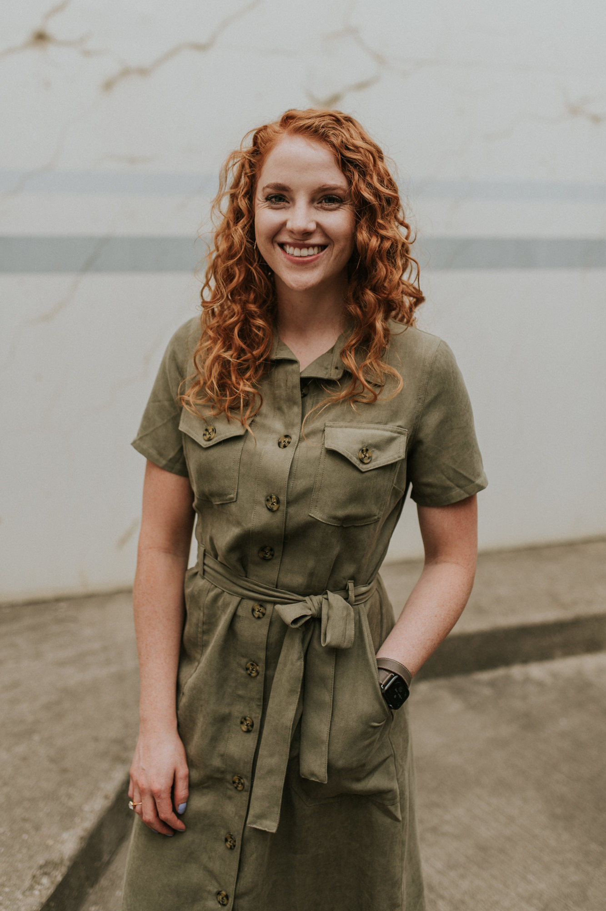

Linnea Meyer

Education
North Dakota State University, Fargo, ND || Graduation 2015
B.S. Human Development and Family Science Minor: Women Studies
Financed Major portion of college tuition through personal earnings and employment scholarship
Field Experience
Infant Cognitive Development Lab || August-December 2014
- Expand and enhanced cold calling skills for research study
- Observed infants to better understand gender preferences and cognitive development stages
FirstChoice Clinic || November 2014-May 2015
- Exhibit well-rounded customer service skills by accurately answering questions from the public
- Conceptualize a more in-depth understanding of aiding the community with pregnancy support
Experience
Dakota Eye Institute || June 2015-January 2021
Optician/Contact lens Technician
- Assist patients in understanding and selecting suitable eyewear
- Adjusted eyeglasses ensuring proper fitting and repairing broken frames
Glasser Images || June 2017-October 2020
Photographer
- Directed wedding parties to establish a timely schedule
- Used resources with each new bridal couple to establish a creative outle
- Provided sophisticated communication between team, wedding party and guests
Biolife Plasma Services, Moorhead, MN || July 2013-June 2015
Senior Plasma Center Technician
Sanford Health, Fargo, ND || July 2012-July 2013
Laboratory Tech Assistant
- Ensure exception quality of work by adhering to company policy
- Enrich team working abilities to increase overall function
- Built trust and minimize patient discomfort during phlebotomy procedures
Application Assistant || December 2011-July 2012
- Performed precise data entry and upheld patient confidentiality by acting in compliance with HIPPA guidelines
- Helped integrate new software by training in medical based personal to the Epic System
Involvement || Fall 2011-Fall 2014
FOCUS || Fellowship of Catholic University Students
- Participated in Bison Catholic volunteer activities
- Led weekly bible study and one on one discipleship
*Referenced Available upon request